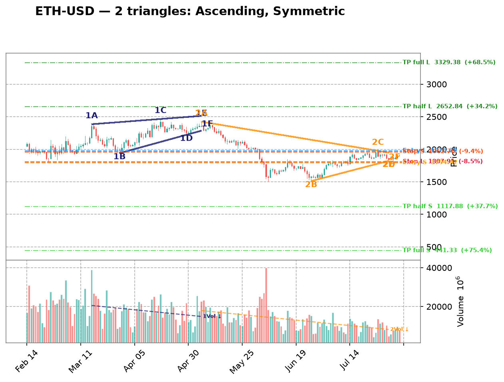
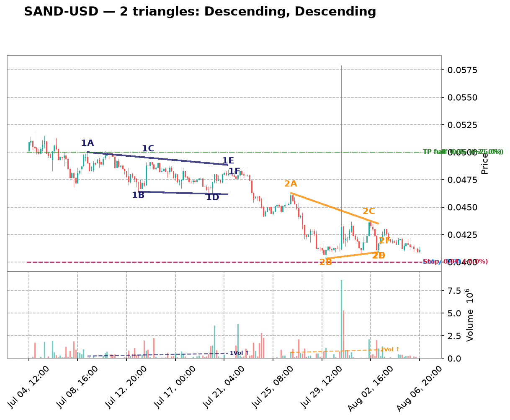
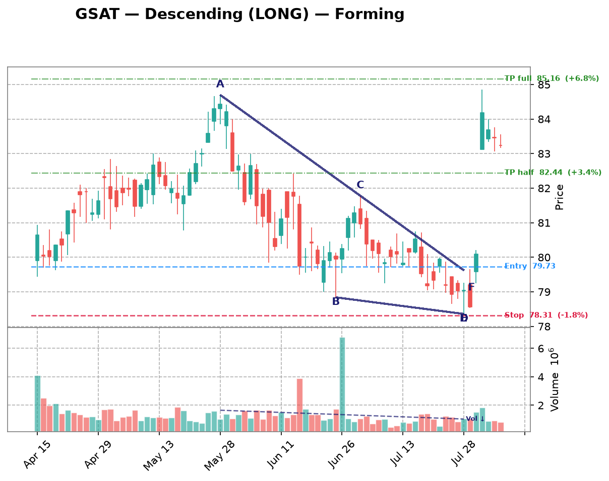

| Date | Symbol | TF | Pattern | Dir | Verdict | Claude Pattern | Claude Dir | Conf | Rec |
|---|---|---|---|---|---|---|---|---|---|
| crypto 10 patterns | |||||||||
| 2026-08-20 | DOGE-USD | 1d | Descending | LONG | Disputed | ? | ? | Certainty: 80 | — |
Chart  Claude Notes The right edge of the chart (Jul-Aug) shows price in a very tight, flat consolidation around 0.069-0.075 after a prolonged downtrend from May highs. There's no clear converging structure - both upper and lower boundaries are essentially flat/horizontal with very low volatility, resembling a tight range or flag rather than a descending triangle with lower highs. A descending triangle requires a clearly falling upper trendline converging into a flat support; here the recent candles show minimal directional slope on either side, more consistent with basing/consolidation after a downtrend. Volume has also dried up significantly, which fits consolidation but doesn't confirm a triangle breakout setup. I disagree with the algorithm's descending triangle label as the upper boundary isn't making distinct lower highs in a converging pattern - it's more of a rectangle/flat consolidation at the low end of the trend. Presence certainty 80/100 — how sure Claude is that its found/not-found call is correct | |||||||||
| 2026-08-20 | XRP-USD | 1d | Descending | LONG | Disputed | ? | ? | Certainty: 80 | — |
Chart  Claude Notes The right side of the chart (Jun 15 - Aug 04) shows price consolidating in a fairly flat, narrow range roughly between 1.0 and 1.2, but there's no clear convergence between an upper resistance and lower support line. Both the highs and lows are roughly flat/sideways rather than one line descending into the other. This looks more like a flat consolidation/rectangle than a descending triangle, which would require a clearly declining upper trendline with lower highs converging into a flat support. The overall multi-month trend is a steady downtrend with lower highs and lower lows in stair-step fashion (Jan-Aug), not a converging wedge. I don't see at least two clean touches forming a descending upper line squeezing against a flat lower line near the right edge - price action in the last ~6 weeks is choppy and range-bound rather than compressing toward an apex. Presence certainty 80/100 — how sure Claude is that its found/not-found call is correct | |||||||||
| 2026-08-20 | VET-USD | 1d | Descending | LONG | Disputed | ? | ? | Certainty: 78 | — |
Chart  Claude Notes From late June through late July, price has been trading in a tight horizontal range between roughly 0.0044 and 0.0050 with no clear convergence - both the highs and lows appear essentially flat, not narrowing toward an apex. This looks more like a flat consolidation/rectangle after a steep downtrend rather than a descending triangle, which requires a clearly declining upper trendline (lower highs) against a flat support. The recent highs (mid-July ~0.0050, late July ~0.0048) are not showing a strong descending slope, and lows are also flat rather than rising. I don't see the compression/apex structure needed to confirm a triangle; it reads as a basing/sideways range instead. Presence certainty 78/100 — how sure Claude is that its found/not-found call is correct | |||||||||
| 2026-08-20 | SOL-USD | 1d | Symmetric | SYMMETRIC | Disputed | ? | ? | Certainty: 75 | — |
Chart  Claude Notes The right-side of the chart (late June through August) shows a choppy, range-bound consolidation between roughly 72-83, but it doesn't show clear convergence — highs and lows are fairly flat/parallel rather than narrowing into an apex. Early July had a higher swing (~83) then price settled into a tight sideways band around 72-78 with no clear rising lower trendline or falling upper trendline meeting at a point. This looks more like a flat consolidation/range or minor channel than a symmetric triangle. The algorithm's flag is plausible given the general narrowing of the last 3-4 weeks' range, but the touch points are inconsistent (highs at ~83, ~78, ~77, ~74 are declining slowly while lows hover 71-76 without a clear rising trend), so I don't see a convincing two-line convergence with well-defined touches on each side. Presence certainty 75/100 — how sure Claude is that its found/not-found call is correct | |||||||||
| 2026-08-20 | ETH-USD | 1d | Symmetric | SYMMETRIC | Disputed | ? | ? | Certainty: 72 | — |
Chart  Claude Notes The right side of the chart (mid-June through July) shows a recovery from ~1580 lows into a fairly narrow, choppy sideways range between roughly 1800-1950, but this looks more like a flat consolidation/range than a converging triangle. Highs are roughly flat (~1900-1950) and lows are also roughly flat (~1800-1850), not showing a clear ascending or descending trendline convergence toward an apex. There's no obvious series of higher lows against flat highs (ascending) or lower highs against flat lows (descending), and the swings aren't tightening into a clear symmetric wedge - they've been fairly stable in width over the last ~15 candles. This looks more like a rectangle/range-bound consolidation than a triangle. The algorithm may be picking up on the general narrowing from the May-June selloff into consolidation, but the most recent price action doesn't show clear consistent convergence with 2-3 credible touches on both bounding lines within the recent window. Presence certainty 72/100 — how sure Claude is that its found/not-found call is correct | |||||||||
| 2026-08-20 | MANA-USD | 4h | Ascending | SHORT | Disputed | ? | ? | Certainty: 78 | — |
Chart  Claude Notes The right side of the chart (late July through early August) shows price consolidating in a tight, mostly flat range between ~0.0655 and ~0.0680 with no clear converging trendlines. Highs and lows are roughly parallel rather than converging, resembling a flat/rectangular consolidation or minor channel rather than an ascending triangle. There's no clearly rising support line with higher lows, nor a flat resistance being tested repeatedly with increasing frequency. The broader chart shows a downtrend from the July 6-15 highs into this consolidation, but the recent price action lacks the compression/apex structure needed for a valid triangle. I disagree with the algorithm's ascending triangle flag - the pattern is more consistent with a sideways range than a converging triangle. Presence certainty 78/100 — how sure Claude is that its found/not-found call is correct | |||||||||
| 2026-08-20 | SAND-USD | 4h | Descending | LONG | Disputed | ? | ? | Certainty: 78 | — |
Chart  Claude Notes The chart shows a clear, sustained downtrend from early July (~0.052) into a strong decline through late July (~0.041), followed by a period of choppy, range-bound consolidation from late July into early August between roughly 0.041-0.044. This right-side consolidation is fairly flat on both top and bottom - not a converging wedge with a descending upper trendline and flat lower support. There's no clear series of lower highs compressing toward a flat support; instead price is oscillating sideways in a rough rectangle/range after the downtrend. This looks more like a flag/consolidation or rectangle than a descending triangle. I don't see the characteristic narrowing apex the algorithm flagged - the recent candles (Aug 2-6) show a roughly flat, non-converging range rather than compression toward a point. Presence certainty 78/100 — how sure Claude is that its found/not-found call is correct | |||||||||
| 2026-08-20 | XLM-USD | 3h | Descending | LONG | Disputed | ? | ? | Certainty: 85 | — |
Chart  Claude Notes The chart shows a clear downtrend with a series of lower highs and lower lows, not a converging triangle. Since early July the price has moved from ~0.21 down to ~0.16 in a fairly consistent stepwise decline with brief consolidation bounces (each rally being weaker than the last). There is no flat or rising support line - the 'lows' are progressively lower (0.18 -> 0.175 -> 0.17 -> 0.16), which contradicts the ascending triangle premise of rising lows against flat resistance. The upper boundary is also not flat; highs are declining too. This looks like a staircase downtrend rather than a triangle consolidation. Near the right edge, price is still declining with no clear compression/convergence into an apex - it's already trending down freely. I disagree with the algorithm's ascending triangle flag; the structure is a descending staircase, not a converging wedge with rising support. Presence certainty 85/100 — how sure Claude is that its found/not-found call is correct | |||||||||
| 2026-08-20 | ETC-USD | 3h | Descending | LONG | Disputed | ? | ? | Certainty: 82 | — |
Chart Claude Notes The right side of the chart shows a persistent downtrend with lower highs and lower lows, not a descending triangle. A descending triangle requires a flat support line with repeated tests at roughly the same price, but here price has been steadily declining from ~6.8 to ~6.4 with no flat horizontal base - each swing low is lower than the last (6.8, 6.6, 6.5, 6.4, 6.35). This is a clean downtrend/channel rather than a converging triangle. There's no clear compression or convergence between two trendlines near the apex; volume also shows no notable contraction pattern typical of a triangle nearing breakout. I disagree with the algorithm's flag - this looks like continued bearish momentum rather than a basing/consolidation triangle. Presence certainty 82/100 — how sure Claude is that its found/not-found call is correct | |||||||||
| 2026-08-20 | VET-USD | 3h | Ascending | SHORT | Disputed | ? | ? | Certainty: 78 | — |
Chart  Claude Notes The right side of the chart shows a choppy sideways range roughly between 0.00463 and 0.00468, without clear converging trendlines. Highs are not descending in a stepwise manner and lows are not consistently rising - there's a spike up to 0.0048 around Aug 03, then a drift back down to a flat range. This looks more like consolidation/range-bound price action with a slight downward drift rather than a defined ascending triangle with rising support and flat resistance. I don't see at least two clean, consistent touches on a rising lower trendline paired with a flat upper trendline near the current right edge. The algorithm's flag seems to be picking up on the general down-drift-into-range pattern rather than a true triangle structure. Presence certainty 78/100 — how sure Claude is that its found/not-found call is correct | |||||||||
| crypto-equity 5 patterns | |||||||||
| 2026-08-20 | MSTR | 3h | Descending | LONG | Disputed | ? | ? | Certainty: 72 | — |
Chart  Claude Notes From mid-July onward, price is trading in a fairly flat range roughly between 90-95 support and 100-103 resistance, without clear convergence — highs and lows are not consistently narrowing toward an apex. The right edge shows price oscillating around 95-99 with no tightening range, more consistent with a sideways consolidation/rectangle than a descending triangle. A descending triangle requires flat lows and clearly lower highs; here the highs (100-103 in mid-July, ~99 in early Aug) are only marginally lower and lows are inconsistent (dipping to 89-91 in early Aug, deeper than prior lows), which contradicts a clean descending triangle structure. I disagree with the algorithm's flag — this looks more like range-bound consolidation than a converging triangle. Presence certainty 72/100 — how sure Claude is that its found/not-found call is correct | |||||||||
| 2026-08-09 | MSTR | 1h | Ascending | SHORT | Disputed | ? | ? | Certainty: 78 | — |
Chart  Claude Notes The right-side price action (late Aug 5 into Aug 6) shows a decline from ~99 to ~96.5 with lower highs and lower lows together — this looks like a mild downtrend/pullback rather than a converging triangle with a rising support line. There's no clear rising trendline of higher lows; instead both highs and lows are declining in tandem, more consistent with a small descending channel or simple retracement than an ascending triangle. No flat resistance line is visible either (highs are dropping from ~99 to ~97.5 to ~97). I don't see the two clearly converging trendlines required for a valid triangle at the right edge, so I disagree with the algorithm's ascending triangle / short flag. Presence certainty 78/100 — how sure Claude is that its found/not-found call is correct | |||||||||
| 2026-08-09 | CIFR | 1h | Descending | LONG | Disputed | ? | ? | Certainty: 78 | — |
Chart  Claude Notes The chart shows a series of large swing oscillations (roughly 26->18->24->17->26->18->25->18) rather than a converging structure. Each swing has similar amplitude, indicating a broad trading range/downtrend with volatility rather than a narrowing triangle. Near the right edge, price is declining from ~25 to ~18-19 with no flattening support line or clear lower highs converging into an apex - the recent candles show a steady downward slide, not compression. There is no consistent horizontal support with descending highs; the swings are too wide and repetitive to qualify as a descending triangle. I disagree with the algorithm's flag - this looks like continued range-bound/down-trending price action, not a triangle nearing apex. Presence certainty 78/100 — how sure Claude is that its found/not-found call is correct | |||||||||
| 2026-08-09 | MARA | 1h | Descending | LONG | Disputed | ? | ? | Certainty: 78 | — |
Chart  Claude Notes {
"found_triangle": false,
"pattern_type": null,
"direction": null,
"presence_confidence": 78,
"pattern_quality": null,
"notes": "The chart shows an overall downtrend with successive lower highs (15, 14, 13, 12.7, 12) and lower lows (12, 11.8, 10.7, 10, 10.7), forming a descending staircase rather than a converging triangle. There's no flat/horizontal support line - the lows are also declining, not holding at a consistent level. At the right edge, price is consolidating in a tight range around 10.7-12 but without clear evidence of a rising lower boundary or flat lower support meeting a descending upper trendline with 3+ touches each. This looks more like a broader downtrend with intermittent consolidation than a well-defined descending triangle. The algorithm's flag is plausible given the recent narrowing range, but the lower boundary isn't flat - it's still sloping down, making this more consistent with a bearish channel/flag than a classic descending triangle setup for a LONG bias, which would typically need a firm horizontal support.",
} Presence certainty 78/100 — how sure Claude is that its found/not-found call is correct | |||||||||
| 2026-08-09 | IREN | 1h | Symmetric | SYMMETRIC | Disputed | ? | ? | Certainty: 72 | — |
Chart  Claude Notes The chart shows a broad downtrend from late June (~57) into a choppy bottoming/ranging structure from mid-July through early August, oscillating between roughly 30 and 44 with multiple swing highs and lows of similar magnitude - more like a wide horizontal range than a converging wedge. Near the right edge (early August), price is bouncing between ~37-41 without clear narrowing of highs and lows; recent candles show similar range width to prior weeks rather than compression toward an apex. I don't see two clearly converging trendlines with consistent touch points - the swing highs (44, 43, 41) and lows (33, 30, 36) don't form a tight symmetric convergence, they look more like a rounded/ranging base. I disagree with the algorithmic flag; this looks more like consolidation/basing after a downtrend rather than a well-defined symmetric triangle. Presence certainty 72/100 — how sure Claude is that its found/not-found call is correct | |||||||||
| mega-cap 4 patterns | |||||||||
| 2026-08-20 | AMZN | 1d | Descending | LONG | Disputed | ? | ? | Certainty: 80 | — |
Chart  Claude Notes The right edge shows a sharp rally from ~262 to ~287 in late July/early August followed by a small pullback over just 4-5 candles — this is a short impulsive move with retracement, not a converging triangle. There's no clear flat support line or descending resistance line with multiple touch points; only 2-3 candles exist in the pullback, insufficient to establish a support/resistance structure. The broader chart (Apr-Jul) shows a rounded W-shaped consolidation, not a triangle either. I disagree with the algorithm's descending triangle call — there's no visible flat bottom or series of lower highs converging toward it; it looks more like a brief profit-taking dip after a breakout gap up. Presence certainty 80/100 — how sure Claude is that its found/not-found call is correct | |||||||||
| 2026-08-20 | NVDA | 1d | Descending | LONG | Disputed | ? | ? | Certainty: 78 | — |
Chart Claude Notes The right side of the chart shows a sharp V-shaped reversal off the ~190 low in early August followed by a strong, fairly steep rally to ~220, not a converging triangle. There's no clear descending upper trendline (lower highs) forming against a flat support - instead price just broke sharply upward from a single low. The prior months show a broad choppy range (200-235) with no consistent narrowing structure. I don't see at least two credible touches on both an upper resistance line and lower support line converging toward an apex near the current price action; the recent move looks more like an impulsive breakout/rally than a triangle consolidation. Disagree with the algorithm's descending triangle flag - the pattern lacks the flat support + declining resistance structure, and price has already moved decisively away from the recent low rather than compressing. Presence certainty 78/100 — how sure Claude is that its found/not-found call is correct | |||||||||
| 2026-08-20 | META | 1d | Descending | LONG | Disputed | ? | ? | Certainty: 72 | — |
Chart  Claude Notes The right edge shows choppy, range-bound price action between roughly 580 and 685, but there's no clear convergence — highs and lows are not consistently narrowing. The last few weeks show a sharp drop to ~525, a bounce to ~685, then decline back to ~590, which looks more like volatile consolidation/noise than a descending triangle. A descending triangle needs a flat support with lower highs, but support here is not flat (it dipped to 525 recently, well below prior lows near 600), invalidating the flat-bottom criterion. I don't see a credible converging apex forming near the right edge, so I disagree with the algorithm's flag. Presence certainty 72/100 — how sure Claude is that its found/not-found call is correct | |||||||||
| 2026-08-20 | GOOGL | 4h | Ascending | SHORT | Disputed | ? | ? | Certainty: 85 | — |
Chart  Claude Notes The right side of the chart shows a strong, sharp uptrend from ~320 to a peak near 383, followed by a sharp pullback to ~358. There's no evidence of compression or converging trendlines - price made a clean impulsive rally then a single sharp reversal candle down. There are not two distinct touch points on both a rising support line and a flat/falling resistance line; instead this looks like a blow-off top / reversal candle after a strong rally, not a triangle consolidation. The algorithm's 'ascending triangle' flag appears to be a false positive - there's no flat resistance being tested multiple times, just one strong high followed by a large reversal candle. This looks more like a potential exhaustion/reversal pattern than a triangle breakout setup. Presence certainty 85/100 — how sure Claude is that its found/not-found call is correct | |||||||||
| semiconductors 3 patterns | |||||||||
| 2026-08-20 | ADI | 4h | Descending | LONG | Disputed | ? | ? | Certainty: 70 | — |
Chart  Claude Notes The chart shows a strong downtrend from late June through late July (price falling from ~430 to ~355), followed by a modest basing/consolidation near 355-385 in early August. There isn't a clear flat support line with a descending resistance line converging toward it - the recent price action shows relatively flat lows (~355-365) but the 'highs' in the last few candles (Aug 05 area) are actually rising slightly (from ~378 to ~385), which is more consistent with a small basing/reversal attempt than a descending triangle. The algorithm may have flagged the overall downtrend with a flattening bottom, but there are not enough clear lower-high touch points forming a descending resistance line - the recent candles show sideways-to-slightly-up action, not compression into an apex. This looks more like a downtrend that is potentially bottoming rather than a textbook descending triangle. Presence certainty 70/100 — how sure Claude is that its found/not-found call is correct | |||||||||
| 2026-08-09 | LRCX | 1h | Ascending | SHORT | Disputed | ? | ? | Certainty: 72 | — |
Chart  Claude Notes The right-side price action (early Aug) shows a choppy range between roughly 305-320, but there's no clear ascending support line—lows are flat/noisy (around 305-308) rather than making distinct higher lows, and the highs are also roughly flat (~315-320) rather than converging. This looks more like a horizontal consolidation/rectangle than a true ascending triangle. The algorithm likely flagged minor higher-low bumps, but there aren't 2-3 clean touch points forming a rising trendline distinct from a flat one. Prior to this, price action from mid-July was a clear downtrend with lower highs/lower lows, not a triangle. Given the ambiguity of the recent consolidation, I lean toward rejecting the triangle call, though a loose case for a shallow ascending structure isn't impossible. Presence certainty 72/100 — how sure Claude is that its found/not-found call is correct | |||||||||
| 2026-08-09 | AMAT | 1h | Symmetric | SYMMETRIC | Disputed | ? | ? | Certainty: 72 | — |
Chart  Claude Notes The right side of the chart shows a rally from ~500 to ~555 followed by a pullback to ~530, but this looks like a rounded top / pullback within a broader swing rather than a converging triangle. There's no clear sequence of lower highs meeting higher lows - the recent candles (Aug 03-08) show a peak around 555 then a fairly sharp drop to 530, which is more consistent with a short-term downtrend or consolidation than a symmetric wedge. I don't see at least two clean, roughly parallel converging trendlines with multiple touches on each side near the apex. The algorithm may be reacting to the general narrowing of range after the spike, but the touch points are too few and inconsistent to confirm a genuine symmetric triangle. Presence certainty 72/100 — how sure Claude is that its found/not-found call is correct | |||||||||
| forex 2 patterns | |||||||||
| 2026-08-09 | EURUSD=X | 1h | Ascending | SHORT | Disputed | ? | ? | Certainty: 82 | — |
Chart  Claude Notes The right side of the chart shows a clear downtrend from the Aug 5 peak (~1.156) into Aug 6, with lower highs and lower lows in a fairly consistent decline, followed by a flattening/consolidation near 1.1525-1.153. There's no clear rising support line with higher lows to form an ascending triangle - instead price dropped sharply and is now consolidating in a narrow range without a defined converging structure. The algorithm's ascending triangle call doesn't fit since there's no series of higher lows visible; the recent price action looks more like a sharp decline stabilizing at a new lower level rather than a triangle compression. Not enough touch points on both an upper and lower trendline to confirm any triangle pattern near the apex on the right edge. Presence certainty 82/100 — how sure Claude is that its found/not-found call is correct | |||||||||
| 2026-08-09 | NZDUSD=X | 1h | Ascending | SHORT | Disputed | ? | ? | Certainty: 78 | — |
Chart  Claude Notes The right side of the chart shows price consolidating in a choppy range between ~0.5865 and ~0.590 after a strong impulsive rally from late July. However, this looks more like a flat/rectangular consolidation than an ascending triangle - the highs are roughly flat (~0.590) but the lows are also fairly flat/choppy (~0.5865-0.587), not showing a clear rising sequence of higher lows. There's no clean converging trendline structure - both boundaries appear roughly horizontal rather than one flat and one rising. This resembles sideways consolidation or a minor pullback/flag after the breakout rather than a textbook ascending triangle with rising support. The algorithm's flag seems to be picking up on the tightening range but the specific 'rising lower trendline' criterion for ascending triangle isn't clearly satisfied here. Presence certainty 78/100 — how sure Claude is that its found/not-found call is correct | |||||||||
| hardware 2 patterns | |||||||||
| 2026-08-20 | DELL | 1d | Ascending | SHORT | Disputed | ? | ? | Certainty: 75 | — |
Chart  Claude Notes The right side of the chart shows a choppy uptrend with wide swings between roughly 370 and 485, not a converging pattern. Highs and lows are both oscillating without a clear narrowing structure - the last few candles actually show expanding range (drop to ~365 then rally to ~485). There's no consistent flat or rising support line with a flat/falling resistance line converging toward an apex. This looks more like consolidation/range-bound volatility within an overall uptrend rather than a triangle. I disagree with the algorithm's ascending triangle flag - there isn't a clear flat resistance level being tested multiple times, and the lows aren't cleanly stepping higher in a triangle-like convergence. Presence certainty 75/100 — how sure Claude is that its found/not-found call is correct | |||||||||
| 2026-08-09 | STX | 1h | Descending | LONG | Disputed | ? | ? | Certainty: 72 | — |
Chart  Claude Notes The right-side price action (Aug 03–06) shows a choppy, roughly flat range between ~815 and ~890 with no clear convergence — highs and lows are similarly spaced throughout rather than narrowing toward an apex. There's a sharp downside wick near Aug 06 breaking below the recent range low (~780), which argues against a clean descending triangle setup (support was violated, not respected). I don't see a consistent flat support line with lower highs converging into it; instead it looks like sideways consolidation/noise with one outlier spike down. Not enough clean touch points on both a flat lower line and a descending upper line to call this a credible descending triangle. Presence certainty 72/100 — how sure Claude is that its found/not-found call is correct | |||||||||
| space 2 patterns | |||||||||
| 2026-08-20 | GSAT | 1d | Descending | LONG | Disputed | ? | ? | Certainty: 82 | — |
Chart  Claude Notes The chart shows a broad rise from mid-April to late May (~80 to ~84.5), then a steady downtrend from late May through late July down to ~79, followed by a sharp gap-up breakout in early August to ~84-85. There's no clear convergence between an upper and lower trendline - the decline into late July is a fairly linear downtrend, not a narrowing wedge, and the most recent candles show a strong breakout with a gap higher rather than compression near an apex. The 'descending triangle' label doesn't fit well since there's no flat support line being tested multiple times - price just fell steadily and then jumped. This looks more like a downtrend that reversed sharply rather than a triangle consolidation. Presence certainty 82/100 — how sure Claude is that its found/not-found call is correct | |||||||||
| 2026-08-20 | SPCE | 4h | Descending | LONG | Both detect, differ on type | Ascending | LONG | Quality: 48 | monitor |
Chart  Claude Notes From mid-July to early August price consolidates in a tightening range: resistance is roughly flat around 2.85-3.00, while support gradually rises from ~2.5 to ~2.7, giving higher lows into the apex — this looks more like an ascending triangle than the algorithm's descending call (a descending triangle would need a flat support and falling highs, which isn't what's shown; highs are fairly flat/slightly rising, not falling). Only 2-3 clear touches on each side, and the last couple of candles already push above the ~2.9-3.0 resistance zone with a volume uptick, suggesting the pattern may already be breaking out rather than still compressing. Given the ambiguity in trendline slope and partial breakout, confidence is moderate and quality is mediocre rather than textbook. Symbol Research Virgin Galactic Holdings (SPCE) is a commercial spaceflight company developing suborbital tourism vehicles. It has faced chronic cash burn, delayed flight cadence, and repeated dilutive share offerings/reverse splits, making it a highly speculative, sentiment-driven small-cap with a history of severe volatility and long-term downtrend since its 2021 highs. Market Sentiment bearish Presence certainty 58/100 — how sure Claude is that its found/not-found call is correct Pattern quality 48/100 — how clean/tradable this specific triangle is Research confidence 40/100 — Phase B research conviction Supporting Signals
Opposing Signals
| |||||||||
| adtech 1 pattern | |||||||||
| 2026-08-20 | U | 1d | Ascending | SHORT | Disputed | ? | ? | Certainty: 90 | — |
Chart  Claude Notes The right side of the chart shows a strong, sustained uptrend with an accelerating breakout - not a converging triangle. Price rises steadily from ~28 in late June through ~32 in early Aug, then sharply accelerates upward with large green candles to ~41, accompanied by a volume spike. There's no flat or descending resistance line being tested repeatedly - each recent high exceeds the last with no rejection, and no clear consolidation/compression is visible before this move. This looks like a breakout/momentum continuation rather than an ascending triangle setup. The algorithm's flag appears to be a false positive, likely picking up on the general upward slope of higher lows without a corresponding flat resistance being tested multiple times. Presence certainty 90/100 — how sure Claude is that its found/not-found call is correct | |||||||||
| commodities 1 pattern | |||||||||
| 2026-08-20 | NEM | 4h | Descending | LONG | Disputed | ? | ? | Certainty: 80 | — |
Chart  Claude Notes The chart shows a clear downtrend from mid-June (~112) into mid-July (~89), followed by a choppy basing/consolidation period, and then a recovery rally into early August (~105). This is a V-shaped reversal structure, not a converging triangle. There's no consistent flat support line with lower highs compressing toward it - the price action from mid-July onward is actually trending upward with higher lows and higher highs, which contradicts a descending triangle setup. The recent candles (late July-Aug) show a rounded bottom/uptrend, not compression into an apex. I disagree with the algorithm's descending triangle flag - there isn't a clear declining upper resistance line with 2+ touches paired with a flat support; instead price broadly bottomed and is now trending higher without the tightening range characteristic of a triangle. Presence certainty 80/100 — how sure Claude is that its found/not-found call is correct | |||||||||
| fintech 1 pattern | |||||||||
| 2026-08-20 | SOFI | 1d | Descending | LONG | Disputed | ? | ? | Certainty: 78 | — |
Chart  Claude Notes The right side of the chart shows a sharp selloff into late July (down to ~15) followed by a strong V-shaped reversal with a large green candle and continued upward drift to ~18.5. This is an impulsive reversal move, not a converging consolidation. There's no clear flat support with lower highs converging - instead price gapped down and then rallied sharply, breaking above the prior swing highs from mid-July (~17.5-18). No credible descending triangle structure is visible; the recent price action looks more like a V-bottom reversal already in progress rather than a compressing pattern with defined trendline touches on both sides. Disagree with the algorithm's flag. Presence certainty 78/100 — how sure Claude is that its found/not-found call is correct | |||||||||
| industrials 1 pattern | |||||||||
| 2026-08-09 | RCL | 1h | Ascending | SHORT | Disputed | ? | ? | Certainty: 80 | — |
Chart  Claude Notes The right side of the chart shows price oscillating in a fairly flat range between ~318 and ~330 after a strong impulsive rally from late July. There's no clear rising lower support line - the recent lows (~320-322) are roughly flat or even slightly declining, not making higher lows as required for an ascending triangle. The highs are also roughly flat (~328-330) rather than converging with the lows. This looks more like a consolidation/range or minor pullback after a strong uptrend rather than a converging triangle. I don't see two clear trendlines converging toward an apex - the pattern lacks the compression structure needed. Disagreeing with the algorithm's ascending triangle flag; the structure is closer to a flat consolidation/rectangle than a triangle with rising support. Presence certainty 80/100 — how sure Claude is that its found/not-found call is correct | |||||||||
| internet 1 pattern | |||||||||
| 2026-08-20 | SNAP | 1d | Descending | LONG | Disputed | ? | ? | Certainty: 82 | — |
Chart  Claude Notes The chart shows a downtrend from late April through mid-June, bottoming out around 4.3-4.5 in a choppy consolidation from mid-June to late July, then a sharp breakout/spike upward in early August with a large volume surge. There's no clear converging structure near the right edge - instead there's a flat basing period followed by an abrupt vertical move up on high volume, which looks more like a breakout from a bottoming range than a descending triangle. A descending triangle requires a flat support with lower highs converging into it, but the recent price action shows expansion (large range candles) rather than compression, and the move already broke out strongly to the upside before any apex could form. This looks more like a double-bottom/basing pattern with breakout rather than a triangle. Presence certainty 82/100 — how sure Claude is that its found/not-found call is correct | |||||||||